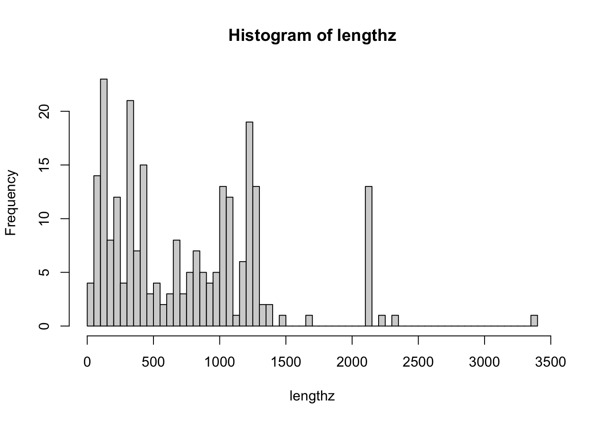
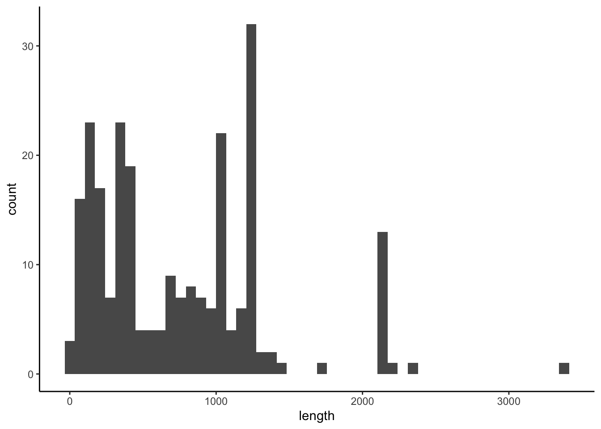
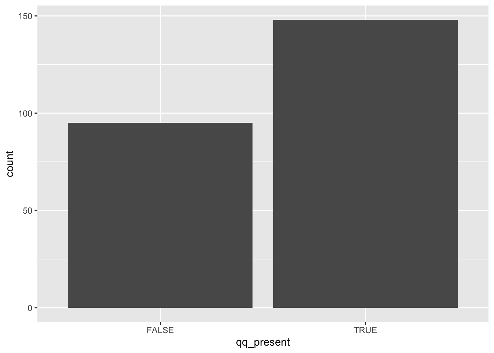

4.2 Analyzing viral protein sequences
Let’s practice with starting a project.
Viral structural proteins are dramatically more important to the general public than they were 2 years ago - and under much more public attention. Let’s take a cursory look at some of these.
What kind of data are we using for this? We’ll retrieve some determined protein sequences from NCBI databases. We’ve already done that work for you already. Here’s a short writeup of what we did, amd we would recommend that you always document where the data came from and how it was retrieved/processed:
The NCBI Identical Protein Groups database was queried for “structural” with “Division” restricted to “Viruses” and “Source database” restricted to “UniProtKB/Swiss-Prot”. 243 results were retrieved as FASTA files and converted using bash commands into separate tab-delimited files. 4
What format are these in?
These files are in the data/viral_structural_proteins folder,
they end in .tsv, are tab-delimited three fields, and look like this:
Q8V433.1 Membrane protein Bovine respiratory coronavirus (strain 98TXSF-110-LUN) MSSVTTPAPVYTWTA...This is not a standard format, because I’d like to tell y’all about reading tab-delimited files. 5
How do you inspect these files? What bash tools do you use to look at these?
Go ahead and set up your project folder.
- make a
datafolder, and copy theviral_structural_proteinsfolder into that - make a
scriptsdirectory, and start a newRmdfile in there - make a note in the
Rmdabout where the data came from - load any libraries you want to use
4.2.1 Reading in tab-delimited file
Let’s read one of them into R.
The records are “delimited” by tabs, so each field is tab-separated.
We’ll need to use the read.delim function and specify a tab separator.
4.2.1.1 Review of looking up documentation
You can look up the documentation for any named function or package by using
the ?function syntax.
Sometimes, you need to use extra backticks to make it work, like ?`+`
If you don’t know what you’re looking for, you can search with ??.
Extra backticks don’t hurt, and are necessary when you have spaces in the
query.
Once the documentation is open, you can search for text.
If you are using the R console, you can use / to open a search bar and
enter-key to search for it.
4.2.1.2 Back to the file-reading…
What does ?read.delim say it does?
How do you set the delimiter/separator as a tab?
6
Is the function expecting there to be a file “header”?
( This would where the first line of the file has the name of each column )
Do we want to set this to TRUE or FALSE ?)
viral_protein_data <- read.delim("data/viral_structural_proteins/viral_proteins_100.tsv",
sep="\t",header=F)
viral_protein_data## V1
## 1 Q8V433.1 Membrane protein
## V2
## 1 Bovine respiratory coronavirus (strain 98TXSF-110-LUN)
## V3
## 1 MSSVTTPAPVYTWTADEAIKFLKEWNFSLGIILLFITVILQFGYTSRSMFVYVIKMIILWLMWPLTIILTIFNCVYALNNVYLGFSIVFTIVAIIMWIVYFVNSIRLFIRTGSWWSFNPETNNLMCIDMKGRMYVRPIIEDYHTLTVTIIRGHLYMQGIKLGTGYSLSDLPAYVTVAKVSHLLTYKRGFLDKIGDTSGFAVYVKSKVGNYRLPSTQKGSGLDTALLRNNI- What is
viral_protein_data? What kind of variable? - How do we find the column names?
- What are two ways to access the protein sequence?
- How do we calculate the number of characters in this protein sequence?
( Try searching with “??
number of characters” )
What type is the V3 column? What should it be?
How do we tell R to treat these strings as they are, and not convert to factors?
This is how you do it in base R. How do you do this in tidyverse?
4.2.2 Loops - doing a similar task multiple times
You will want to repeat this analysis for all the files. The simplest way of doing this is to copy and paste it, and change the filename.
viral_protein_data <- read.delim("data/viral_structural_proteins/viral_proteins_002.tsv",
sep="\t",header=F, as.is=T)
nchar(viral_protein_data$V3[[1]])## [1] 177viral_protein_data <- read.delim("data/viral_structural_proteins/viral_proteins_003.tsv",
sep="\t",header=F, as.is=T)
nchar(viral_protein_data[1,"V3"])## [1] 137Go ahead and do this for all 242 proteins
… just kidding.
This is a lot of work, and each time we do this we can introduce errors. If we ever have more files, we have to copy and paste more. If we ever want to change an argument for all of them, we have to do each one.
Instead, we can work with a list of all the files available:
## [1] "viral_proteins_000.tsv" "viral_proteins_001.tsv" "viral_proteins_002.tsv"
## [4] "viral_proteins_003.tsv" "viral_proteins_004.tsv"Note that I put a [1:5] to limit it to the first 5.
You could also use head(). It’s a good idea to work
with a small subset of files while you are iterating
through development, then scale it up to the entirety.
But watch out…
## [1] "viral_proteins_238.tsv" "viral_proteins_239.tsv"
## [3] "viral_proteins_240.tsv" "viral_proteins_241.tsv"
## [5] "viral_proteins_242.tsv" "viral_structural_proteins.fasta"At the very end is another different file, a FASTA file.
So let’s use a pattern
argument in list.files to specify what we want to list.
And we’ll get back to the FASTA later…
## [1] "viral_proteins_237.tsv" "viral_proteins_238.tsv" "viral_proteins_239.tsv"
## [4] "viral_proteins_240.tsv" "viral_proteins_241.tsv" "viral_proteins_242.tsv".* stands for 0 or more (*) of anything (.). For more details,
look up regular-expressions.
Now how do you calculate the number of characters for each protein?
How do we do this for every file listed … ?
4.2.2.1 What are loops?
Loops are for running a “code block” as many times as the “condition” determines.
A “code block” is either one line of code, or multiple lines of code surrounded by curly brackets - {}
{ code <- "in a block" with <- "multiple lines" }The code just runs. Yep. It’s that simple.
A “condition” is an expression of code that can either evaluate to either
TRUEorFALSE, or set a variable for each time running the code block. This is often just before the code block, in()parentheses.
The most common form of these kind of “control statements” is a for loop.
Other “control statements” or “flow control statements” are
while, repeat, and if.
Let’s look up what they do, with ?`for`
Note the back ticks! These are a trick in R to make anything
be interpreted as literally what you type, and not
any special characters. Like ?`+`, or ?`?`
Here’s an example loop:
## [1] 1
## [1] 2
## [1] 3
## [1] 4The pieces:
(i in 1:4)is what is being looped over -1:4is a vector of 1 through 4 that is created, and it is put one at a time intoi(a new variable). You need the parentheses.{and}denote the opening and closing brackets, specify the “code block” that is run each time.inside this “code block” is
print(i)- it prints the variablei, which is set to a value of 1, 2, 3, or 4 for each loop
How do we loop through and print each file name?
What are the (1) code block and (2) loop condition ?
## [1] "viral_proteins_000.tsv"
## [1] "viral_proteins_001.tsv"
## [1] "viral_proteins_002.tsv"
## [1] "viral_proteins_003.tsv"
## [1] "viral_proteins_004.tsv"How do we modify this to calculate the protein length?
I add a line where we use nchar, but i is the filename instead of me
typing it in there.
for (i in list.files(path="data/viral_structural_proteins",
pattern=".*tsv")[1:5] ) {
print(i)
print(nchar(read.delim(i)$V3[[1]]))
}## [1] "viral_proteins_000.tsv"## Warning in file(file, "rt"): cannot open file 'viral_proteins_000.tsv': No such
## file or directory## Error in file(file, "rt"): cannot open the connectionError! It is looking for a file viral_proteins_000.tsv, but it is looking
in this directory. It is actually in data/viral_structural_proteins.
Look up the list.files documentation, and find how to get it to return
the full name of the file.
Next, this should work…
for (i in list.files(path="data/viral_structural_proteins",
pattern=".*tsv",full.names=T)[1:5] ) {
print(nchar(read.delim(i,sep="\t",header=F,as.is=T)$V3[[1]]))
}## [1] 1248
## [1] 1254
## [1] 177
## [1] 137
## [1] 117And yep, we have lengths of protein sequences.
How do we go through the files backwards?
How do we process every third file?
How do we only process files that end in “5.tsv” ?
4.2.2.2 Storing values from a loop
How do we store these values for later analysis?
In other languages, “append”. But R is not built that way. It’ll work, but it’s very inefficient. The “R-way” to store values from a loop is to define a vector of the right length, then put each element in it.
Here’s some example vectors that we can create.
## [1] "" "" "" "" "" "" "" "" "" ""## [1] 0 0 0 0 0## [1] FALSE FALSEYou can save these to a variable, and thus have a character vector, numeric vector, or logical vector, of different sizes.
Okay, but how do we access each position to save the value? We need to turn out list of files into indicies. We’ll save it first so we can count how many there are.
seq_along is handy function to create a number sequence along a vector,
otherwise use something like seq(1,length(x)).
# listing files
first_five <- list.files(path="data/viral_structural_proteins",pattern=".*tsv")[1:5]
# looping through files
for (i in seq_along(first_five) ) {
print(i)
print(first_five[i])
}## [1] 1
## [1] "viral_proteins_000.tsv"
## [1] 2
## [1] "viral_proteins_001.tsv"
## [1] 3
## [1] "viral_proteins_002.tsv"
## [1] 4
## [1] "viral_proteins_003.tsv"
## [1] 5
## [1] "viral_proteins_004.tsv"Putting these together, we can create and save a vector of file names:
# listing files
first_five <- list.files(path="data/viral_structural_proteins",pattern=".*tsv")[1:5]
# initializing vectors
filenamez <- vector("character",length(first_five))
# looping through files
for (i in seq_along(first_five) ) {
filenamez[i] <- first_five[i]
}
filenamez## [1] "viral_proteins_000.tsv" "viral_proteins_001.tsv" "viral_proteins_002.tsv"
## [4] "viral_proteins_003.tsv" "viral_proteins_004.tsv"And finally calculate the length of each protein:
# listing files
first_five <- list.files(path="data/viral_structural_proteins",
full.names=T, pattern=".*tsv")[1:5]
# initializing vectors
lengthz <- vector("character",length(first_five))
# looping through files
for (i in seq_along(first_five) ) {
# calculating length and storing it
lengthz[i] <- nchar( read.delim(first_five[i],
header=F,as.is=T,sep="\t")$V3[[1]]
)
}
lengthz## [1] "1248" "1254" "177" "137" "117"Now we can take off the [1:5] limiter, and do the whole set:
# listing files
first_five <- list.files(path="data/viral_structural_proteins",
full.names=T, pattern=".*tsv")
# initializing vectors
lengthz <- vector("character",length(first_five))
# looping through files
for (i in seq_along(first_five) ) {
# calculating length and storing it
lengthz[i] <- nchar( read.delim(first_five[i],
header=F,as.is=T,sep="\t")$V3[[1]]
)
}How do we go about visualizing/analyzing this?
## Error in hist.default(lengthz): 'x' must be numericer what…? Debug! What is lengthz?
## chr [1:243] "1248" "1254" "177" "137" "117" "117" "858" "1242" "1255" ...Character? Let’s try numeric instead…
# listing files
first_five <- list.files(path="data/viral_structural_proteins",
full.names=T, pattern=".*tsv")
# initializing vectors
lengthz <- vector("numeric",length(first_five))
# looping through files
for (i in seq_along(first_five) ) {
# calculating length and storing it
lengthz[i] <- nchar( read.delim(first_five[i],
header=F,as.is=T,sep="\t")$V3[[1]]
)
}Base R histogram

More fancy ggplot
library(ggplot2)
ggplot( data.frame(length=lengthz) )+theme_classic()+
aes(x=length)+geom_histogram(bins=50)
## Min. 1st Qu. Median Mean 3rd Qu. Max.
## 12 250 660 742 1112 33904.2.3 Extending the workflow
How do you think about/plan the workflow we’ve built?
How is it organized?
One way is to flatten out all the tasks, and to script each individual task every time it is done. This requires the author, user, and reader to understand a lot of complexity.
Another way to approach this is to cluster them into a hierarchy of modules.
In this organization, the analyst can operate at levels of steps, modules, and specific instructions, depending on what is needed.
Organizing your workflows into composable modules lets you extend these to un-ancipiated complexity. You could imaging using these steps or modules:
in new ways by composing the elements together, to analyze a different source of proteins, with a new analysis, with similar plots:
Where maybe these are how the inputs/outputs are defined:
reading_proteins:
input: directory path of proteins to read
output: protein sequences
calculating lengths:
input: protein sequences
output: numeric vector, of lengths
finding a motif:
input: protein sequences
output: numeric vector, of presence/absence4.2.3.1 Looking for a smoking motif…
Some folks believe the insertion of an amino-acid sequence of PRRA, relative
to other related coronaviruses, is very rare and a clear sign of engineering
in the SARS-CoV-2 genome.
I don’t know hardly anything about furin-cleavage sites or viral evolution,
but since this is an introductory R class,
we can use the tools we have to look for this sequence in the files.
Let’s do that7 How?
Figure out how to search for “PRRA” in a character string of a protein sequence.
- try using
grepl, like so:grepl("PRRA",protein_sequence)whereprotein_sequenceis the variable containing the protein sequence (similar to what you put intoncharbefore!).
- try using
Modify your
forloop to now look for this motif instead of calculating number of characters. Save the values in a “numeric” vector. 8Plot the results. How often do you find this motif in this dataset?
4.2.4 Some operations on strings
Character strings are a common type of data, and there’s lots of ways to cut, dice, extract, and recognize elements to help your work. Here’s some ideas:
4.2.4.1 Base R tools
Let’s start with one of those above sentences. You can make a string by putting characters in between single or double quotes:
## [1] "Character strings are a common type of data, and there's lots of ways to"## [1] "character" "vector" "data.frameRowLabels"
## [4] "SuperClassMethod"## chr "Character strings are a common type of data, and there's lots of ways to"grep and grepl are good for searching for patterns (like grep in bash).
The first returns position, the second returns TRUE or FALSE.
What kind of value is that then?
I only ever use grepl anymore. It searches for a pattern string
in a character vector x.
## [1] TRUE## [1] FALSE## [1] TRUEYou can use complex regular expressions to specify more complex patterns. These can get really complex and really powerful. We’re not going to explain these here, except just for the example below.
Ask on Slack later if you’d like more help with something specific.
Also of use is sub and gsub.
These substitute patterns with replacements, for the
first occurrence (sub) or globally (gsub).
These are really handy for modifying data-tables.
For example, let’s say you’d like to split up filenames by dates:
datar <- data.frame(stringsAsFactors=F,
filenames=c(
"210607_pilot_transformation_works.jpeg",
"210609_transformation_seems_to_work.jpeg",
"210610_failed_gel_images.jpeg"
)
)
datar$dates <- gsub(pattern="(\\d\\d\\d\\d\\d\\d)_(.*)\\.jpeg",
replacement="\\1",x=datar$filenames)
datar$names <- gsub(pattern="(\\d\\d\\d\\d\\d\\d)_(.*)\\.jpeg",
replacement="\\2",x=datar$filenames)
datar## filenames dates names
## 1 210607_pilot_transformation_works.jpeg 210607 pilot_transformation_works
## 2 210609_transformation_seems_to_work.jpeg 210609 transformation_seems_to_work
## 3 210610_failed_gel_images.jpeg 210610 failed_gel_imagesThe above uses regular expressions, where \\d is matching any digit,
.* matches anything, and () denote “groups” to “capture”.
In the “replacement”, these “groups” are referred to by \\1 or \\2.
There are better (cleaner) ways of doing this…
4.2.4.2 stringr and the tidyverse
The tidyverse includes a package stringr. This cleans up some of these
basic string operations, makes them more standardized, and gives them nice
standardized names. It’s worth using, but you should know about the other
base R functions!
For example the above,
datar <- data.frame(stringsAsFactors=F,
filenames=c(
"210607_pilot_transformation_works.jpeg",
"210609_transformation_seems_to_work.jpeg",
"210610_failed_gel_images.jpeg"
)
)
datar$dates <- str_extract(string=datar$filenames,pattern="\\d\\d\\d\\d\\d\\d_")
datar## filenames dates
## 1 210607_pilot_transformation_works.jpeg 210607_
## 2 210609_transformation_seems_to_work.jpeg 210609_
## 3 210610_failed_gel_images.jpeg 210610_There are many options, type str_ and then TAB.
For much much more about strings, check out Wickham’s R4DS book. Especially for the special characters part
Or even cleaner using tidyverse verbs:
## ── Attaching packages ───────────────────────────────────────────────────────────────────────────────────── tidyverse 1.3.0 ──## ✔ tibble 3.0.4 ✔ purrr 0.3.4
## ✔ tidyr 1.1.2 ✔ dplyr 1.0.2
## ✔ readr 1.4.0 ✔ forcats 0.5.0## ── Conflicts ──────────────────────────────────────────────────────────────────────────────────────── tidyverse_conflicts() ──
## ✖ dplyr::filter() masks stats::filter()
## ✖ dplyr::lag() masks stats::lag()tibble(filenames=c(
"210607_pilot_transformation_works.jpeg",
"210609_transformation_seems_to_work.jpeg",
"210610_failed_gel_images.jpeg"
)
) %>%
separate(col=filenames,sep="_",into=c("date","rest"),extra="merge") %>%
separate(col=rest,sep="\\.",into=c("name","type")) ## # A tibble: 3 x 3
## date name type
## <chr> <chr> <chr>
## 1 210607 pilot_transformation_works jpeg
## 2 210609 transformation_seems_to_work jpeg
## 3 210610 failed_gel_images jpegI’d recommend you use the tidyverse-style manipulations - they’re powerful.
But you should be familiar with base R, to fix bugs.
4.2.5 Back to the motifs
Let’s go ahead and look for that sequence, “PRAR” in the structural proteins we’ve downloaded here. First, we make one example of that code.
We can start with making a positive and negative control so we can debug this easily.
test_string_positive <- "APQPRARCGPGP"
test_string_negative <- "AVASTMEMATEY"
grepl(pattern="PRAR",x=test_string_positive)## [1] TRUE## [1] FALSELooks good.
Now let’s modify our previous code to use this line, and store it into the appropriate position.
How do we do this?
# listing files
all_files <- list.files(path="data/viral_structural_proteins",
full.names=T, pattern=".*tsv")
# initializing vectors
lengthz <- vector("numeric",length(all_files))
motifz <- vector("logical",length(all_files))
# looping through files
for (i in seq_along(all_files) ) {
# calculating length and storing it
lengthz[i] <- nchar(
read.delim(all_files[i],
header=F,as.is=T,sep="\t")$V3[[1]]
)
# looking for motif and storing it
motifz[i] <- grepl(pattern="PRAR",
x=read.delim(all_files[i],
header=F,as.is=T,sep="\t")$V3[[1]]
)
}Wow! This seems like it’s a really rare motif. I wonder what this means, this may be a smoking gun, this has implic….
Oh wait, that’s a typo. It’s “PRRA” not “PRAR”.
# listing files
all_files <- list.files(path="data/viral_structural_proteins",
full.names=T, pattern=".*tsv")
# initializing vectors
lengthz <- vector("numeric",length(all_files))
motifz <- vector("logical",length(all_files))
# looping through files
for (i in seq_along(all_files) ) {
# calculating length and storing it
lengthz[i] <- nchar(
read.delim(all_files[i],
header=F,as.is=T,sep="\t")$V3[[1]]
)
# looking for motif and storing it
motifz[i] <- grepl(pattern="PRRA",
x=read.delim(all_files[i],
header=F,as.is=T,sep="\t")$V3[[1]]
)
}It actually pops up a few times. In what files?
Since motifz is logical, we can use that to index the files vector:
## [1] "data/viral_structural_proteins/viral_proteins_016.tsv"
## [2] "data/viral_structural_proteins/viral_proteins_020.tsv"
## [3] "data/viral_structural_proteins/viral_proteins_075.tsv"
## [4] "data/viral_structural_proteins/viral_proteins_076.tsv"
## [5] "data/viral_structural_proteins/viral_proteins_080.tsv"
## [6] "data/viral_structural_proteins/viral_proteins_109.tsv"
## [7] "data/viral_structural_proteins/viral_proteins_118.tsv"
## [8] "data/viral_structural_proteins/viral_proteins_119.tsv"
## [9] "data/viral_structural_proteins/viral_proteins_191.tsv"
## [10] "data/viral_structural_proteins/viral_proteins_196.tsv"
## [11] "data/viral_structural_proteins/viral_proteins_197.tsv"Additional questions:
In what viruses, what proteins does it pop up? How does that affect your interpretation?
How do you use the skills from Day1/2 to look?
Does it show up where you’d expect it to? What might that suggest about this dataset?
How might we come up with a null model for this? How often would this occur? Under what assumptions? How do you test that?
4.2.6 Conclusion
Write this up! Edit your rmarkdown file to use
4.2.6.1 headers
italics
bold statements
, reference previous figures, or make additional plots, or list out filenames to support your claim. Don’t spend more than a few minutes, but get used to writing your notes down so you save them.
- You can use loops to organize repetitive tasks, such as working through a large list of files and reading them.
- You can analyze strings using functions like
ncharorgrepl. - You can also use the
tidyversefunctions to process these, and to compare and split strings. - Modular design of workflows, using functions or just organized and commented code, can help you extend your analysis to handle new questions as they arise
4.2.6.2 Extra challenge - calculating codon freuencies
Your null model might depend on how often certain amino acids tend to occur. How might you write some R code to count up each occurance of each amino acid?
Here’s a complex line of code that may be adaptable to this problem:
table(
factor(
unlist(
strsplit("ACABA",split="")
),
levels=c("A","B","C","D","E","F","G")
)
)table tabulates the occurances of a string/factor,
factor with a levels argument can create “spaces” for unobserved
letters/strings,
unlist turns a list into not a list,
strsplit breaks up a string into a vector of strings using a pattern
that can also be "".
I wonder what would happen if these vectors were created for each
protein, and then summed... Can you figure out how to do this, how to calculate the amino acid frequencies across all the viral structural proteins?
4.2.7 Extra extra….
4.2.7.1 Demo: how to do this in tidyverse
tidyverse is pretty neat at doing these things in simpler, more readable
code. Here’s how you might approach the above tasks in that paradigm:
1st - list files, but set it in a tibble:
tibble(
filenames=list.files(path="data/viral_structural_proteins",
full.names=T, pattern=".*tsv")
)## # A tibble: 243 x 1
## filenames
## <chr>
## 1 data/viral_structural_proteins/viral_proteins_000.tsv
## 2 data/viral_structural_proteins/viral_proteins_001.tsv
## 3 data/viral_structural_proteins/viral_proteins_002.tsv
## 4 data/viral_structural_proteins/viral_proteins_003.tsv
## 5 data/viral_structural_proteins/viral_proteins_004.tsv
## 6 data/viral_structural_proteins/viral_proteins_005.tsv
## 7 data/viral_structural_proteins/viral_proteins_006.tsv
## 8 data/viral_structural_proteins/viral_proteins_007.tsv
## 9 data/viral_structural_proteins/viral_proteins_008.tsv
## 10 data/viral_structural_proteins/viral_proteins_009.tsv
## # … with 233 more rows2nd - pipe that into a mutate call, where you use map on filenames.
map is like lapply. It takes whatever you have on the left, and puts
it one by one into the function on the right, along with optional arguments
that you list after it. Here, we set col_names to false,
analogous to header in read.delim.
tibble(
filenames=list.files(path="data/viral_structural_proteins",
full.names=T, pattern=".*tsv")
) %>%
mutate(rawfiles=map(filenames,read_tsv,col_names=F)) ## # A tibble: 243 x 2
## filenames rawfiles
## <chr> <list>
## 1 data/viral_structural_proteins/viral_proteins_000.tsv <tibble [1 × 3]>
## 2 data/viral_structural_proteins/viral_proteins_001.tsv <tibble [1 × 3]>
## 3 data/viral_structural_proteins/viral_proteins_002.tsv <tibble [1 × 3]>
## 4 data/viral_structural_proteins/viral_proteins_003.tsv <tibble [1 × 3]>
## 5 data/viral_structural_proteins/viral_proteins_004.tsv <tibble [1 × 3]>
## 6 data/viral_structural_proteins/viral_proteins_005.tsv <tibble [1 × 3]>
## 7 data/viral_structural_proteins/viral_proteins_006.tsv <tibble [1 × 3]>
## 8 data/viral_structural_proteins/viral_proteins_007.tsv <tibble [1 × 3]>
## 9 data/viral_structural_proteins/viral_proteins_008.tsv <tibble [1 × 3]>
## 10 data/viral_structural_proteins/viral_proteins_009.tsv <tibble [1 × 3]>
## # … with 233 more rows3rd - we then unnest the rawfiles. This takes a column of tibbles and makes
it magically just line up with the top level tibble.
Now we’ll also save it as variable datar.
datar <- tibble(
filenames=list.files(path="data/viral_structural_proteins",
full.names=T, pattern=".*tsv")
) %>%
mutate(rawfiles=map(filenames,read_tsv,col_names=F)) %>%
unnest(rawfiles)Then we can process on datar. Note the use of mutate, map, and
wrapping map in unlist to just return the lengths instead of a list of
lengths.
datar %>%
mutate(
protein_length=unlist(map(X3,nchar)),
prra_present=unlist(map(X3,grepl,pattern="PRRA")),
)## # A tibble: 243 x 6
## filenames X1 X2 X3 protein_length prra_present
## <chr> <chr> <chr> <chr> <int> <lgl>
## 1 data/viral_st… Q8JUX5.3 … Chikungun… MEFIPTQTFYN… 1248 FALSE
## 2 data/viral_st… YP_009507… Everglade… MFPFQPMYPMQ… 1254 FALSE
## 3 data/viral_st… NP_042704… African s… MFNIKMTISTL… 177 FALSE
## 4 data/viral_st… NP_042736… African s… MEAVLTKLDQE… 137 FALSE
## 5 data/viral_st… P27413.1 … Rabbit he… MAFLMSEFIGL… 117 FALSE
## 6 data/viral_st… NP_042800… African s… MDTETSPLLSH… 117 FALSE
## 7 data/viral_st… NP_050192… Human bet… MDLKAQSIPFA… 858 FALSE
## 8 data/viral_st… Q306W5.1 … Eastern e… MFPYPTLNYSP… 1242 FALSE
## 9 data/viral_st… NP_040824… Venezuela… MFPFQPMYPMQ… 1255 FALSE
## 10 data/viral_st… YP_003987… Acanthamo… MNYSLEDLPNS… 234 FALSE
## # … with 233 more rowsAnd then we can pipe it into a ggplot:
datar %>%
mutate(
protein_length=unlist(map(X3,nchar)),
prra_present=unlist(map(X3,grepl,pattern="PRRA")),
) %>%
ggplot()+
aes(x=prra_present)+
geom_bar()
And the entire code:
tibble(
filenames=list.files(path="data/viral_structural_proteins",
full.names=T, pattern=".*tsv")
) %>%
mutate(rawfiles=map(filenames,read_tsv,col_names=F)) %>%
unnest(rawfiles) %>%
mutate(
protein_length=unlist(map(X3,nchar)),
prra_present=unlist(map(X3,grepl,pattern="PRRA")),
) %>%
ggplot()+
aes(x=prra_present)+
geom_bar()
I think that’s tidy.
One crucial aspect missing is the actual bash commands used. I did not save them as a script, and I should go back, save them in a script, and re-run that to make sure I get the same result!↩
The formats you’re likely going to have to deal with are CSV, TSV, FASTQ, FASTA, SAM - at least. ↩
Often this is typed into computers and scripts as ", as the tab key will often not put a TAB character into where you’re typing.↩
…since we’re just demonstrating R coding and not representing ourselves as being familiar enough with the field to properly interpret these results. I have no idea what occurance of this would mean or not mean, or are we doing any sort of statistics or comparisons to null expectations.↩
Why not logical, since these are logical results? It makes the
hist()step slightly easier.↩
Licensed Creative Commons Attribution-NonCommercial-ShareAlike 4.0